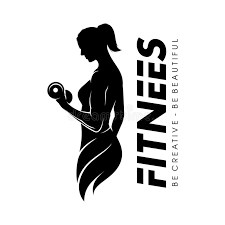

 Gym Website
Basic Exercise for beginner's
Squat
- Drop down into a squat position. You won’t stand at all during this move.
- Drop your knees down to the ground one at a time so you’re kneeling.
- Step your feet back to the ground one at a time, maintaining that squat position.
- Repeat as quickly as you can while maintaining good form.
Pushups
- Start in a plank position. Your core should be tight, shoulders pulled down and back, and your neck neutral.
- Bend your elbows and begin to lower your body down to the floor. When your chest grazes it, extend your elbows and return to the start.
- Focus on keeping your elbows close to your body during the movement.
- Complete 3 sets of as many reps as possible.
Lunges
- Start by standing with your feet shoulder-width apart and arms down at your sides.
- Take a step forward with your right leg and bend your right knee as you do so, stopping when your thigh is parallel to the ground. Ensure that your right knee doesn’t extend past your right foot.
- Push up off your right foot and return to the starting position. Repeat with your left leg. This is one rep.
- Complete 3 sets of 10 reps.
Standing overhead dumbbell presses
- Pick a light set of dumbbells — we recommend 10 pounds to start — and start by standing, either with your feet shoulder-width apart or staggered. Move the weights overhead so your upper arms are parallel to the floor.
- Bracing your core, begin to push up until your arms are fully extended above your head. Keep your head and neck stationary.
- After a brief pause, bend your elbows and lower the weight back down until your triceps muscle is parallel to the floor again.
- Complete 3 sets of 12 reps.
Burpees
- Start by standing upright with your feet shoulder-width apart and your arms down at your sides.
- With your hands out in front of you, start to squat down. When your hands reach the ground, pop your legs straight back into a pushup position.
- Jump your feet up to your palms by hinging at the waist. Get your feet as close to your hands as you can get, landing them outside your hands if necessary.
- Stand up straight, bringing your arms above your head, and jump.
- This is one rep. Complete 3 sets of 10 reps as a beginner.
Side Planks
- Lie on your right side with your left leg and foot stacked on top of your right leg and foot. Prop your upper body up by placing your right forearm on the ground and elbow directly under your shoulder.
- Contract your core to stiffen your spine and lift your hips and knees off the ground, forming a straight line with your body.
- Return to start in a controlled manner. Repeat 3 sets of 10–15 reps on one side, then switch.